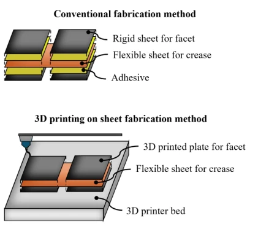
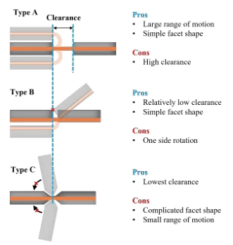
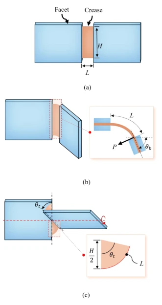
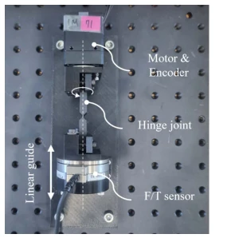
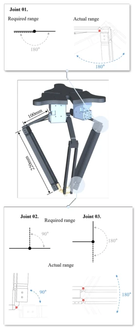
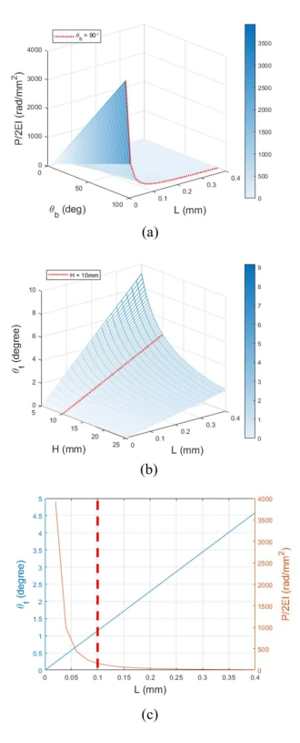
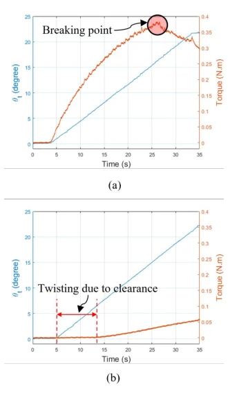
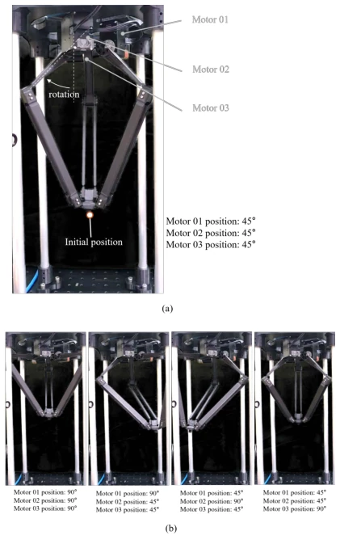

Low Clearance Hinge Joint Mechanism Based on 3D Printing on Sheet Fabrication Methodology
Jaehyung Jang, Euibin Shin, Allison M. Okamura, Jee-Hwan Ryu abspdf
论文点评Review
这篇论文给 Origami 机器人来了个“去胶水化”手术。作者发现传统折纸靠胶水粘，怕水怕热寿命短；而现有的 3D 打印织物方案虽然不用胶，但间隙大精度差。于是他们搞了个“3D 打印在片材上”的新工艺，把柔性片夹在两层打印件中间。选了 Type C 铰链，把间隙压到 0.1mm，还做了个 3 DoF Delta 机器人验证。虽然精度提升了，但作者也承认没搞透片材厚度和塑性变形的关系，属于“先上车后补票”的工程实践。对于搞软体机器人的同行来说，这是个不错的机械结构参考，但别指望它能直接跑通 VLA 模型，毕竟它连个传感器都没提。
This paper performs a "glue-free" surgery on Origami robots. The authors discovered that traditional origami relies on glue for bonding, is sensitive to water and heat, and has a short lifespan; whereas existing 3D-printed fabric solutions, while glue-free, suffer from large gaps and poor accuracy. Consequently, they developed a novel "3D printing on sheets" process, sandwiching the flexible sheet between two printed layers. They selected Type C hinges, reducing the gap to 0.1mm, and validated it with a 3 DoF Delta robot. Although accuracy improved, the authors also admitted that the relationship between sheet thickness and plastic deformation was not fully understood, representing an engineering practice of "getting on the bus before buying the ticket". For peers working on soft robotics, this serves as a good mechanical structure reference, but one should not expect it to directly run VLA models, as it did not even mention a sensor.
研究动机Motivation
传统机器人铰链复杂昂贵 [1]。折纸结构虽轻但依赖胶水组装，胶水在湿热环境下性能下降且寿命短 [2], [3]。现有 3D 打印织物技术虽免胶，但织物刚度低、间隙大，难以满足高精度需求 [8]。现有工作多关注微型机器人 [5], [6]，但厘米级系统对间隙更敏感。胶水在液体中强度骤降 [2]，限制了应用场景。因此需要一种无需胶水且低间隙的制造方法，以解决 Origami 结构在厘米级机器人中的精密运动与耐久性矛盾，避免胶水老化问题，同时克服现有 3D 打印方案间隙过大的缺陷，实现低成本、可定制且耐环境的高精度铰链。
Traditional robot hinges are complex and expensive [1]. Origami structures, while lightweight, rely on glue for assembly; glue performance degrades in humid and hot environments, resulting in a short lifespan [2], [3]. Existing 3D-printed fabric technology, although glue-free, suffers from low fabric stiffness and large gaps, making it difficult to meet high-precision requirements [8]. Existing work mostly focuses on micro-robots [5], [6], but centimeter-scale systems are more sensitive to gaps. Glue strength drops sharply in liquids [2], limiting application scenarios. Therefore, a glue-free and low-gap manufacturing method is required to resolve the contradiction between precision motion and durability of Origami structures in centimeter-scale robots, avoid glue aging issues, while overcoming the defect of existing 3D-printed solutions having excessively large gaps, achieving low-cost, customizable, and environment-resistant high-precision hinges.

Fig. 1. Fabrication method for hinge joint mechanism.
方法Method
整体流程是：设计铰链 -> 3D 打印底面 -> 插入激光切割柔性片 -> 3D 打印顶面。创新点在于：1. 工艺创新：利用 3D 打印暂停插入片材，实现无胶粘合，解决胶水老化问题，减少人工组装。2. 结构设计：对比三种铰链（Type A/B/C），Type A 间隙大，Type B 单侧旋转，Type C 虽形状复杂但间隙最小，利用 3D 打印优势实现复杂形状，选定 Type C。3. 参数优化：基于 Euler-Bernoulli 梁理论分析间隙 L 与弯曲力 P、扭转角θt 的关系，选定 L=0.1mm 平衡精度与力，H=10mm。4. 系统集成：基于此铰链构建 3 DoF Delta 机器人，关节 01 通过双连杆实现 180 度运动，满足 Delta 机构需求。5. 材料选择：使用柔性片材插入，无需轴承和销钉，降低摩擦。
The overall process is: design hinge -> 3D print bottom surface -> insert laser-cut flexible sheet -> 3D print top surface. The innovations lie in: 1. Process innovation: utilizing 3D printing pause to insert the sheet, achieving glue-free bonding, solving the glue aging problem, and reducing manual assembly. 2. Structure design: comparing three hinges (Type A/B/C), Type A has a large gap, Type B allows single-side rotation, Type C although complex in shape has the smallest gap; utilizing 3D printing advantages to achieve complex shapes, Type C was selected. 3. Parameter optimization: based on Euler-Bernoulli beam theory, analyzing the relationship between gap L and bending force P, torsion angle θt, selecting L=0.1mm to balance precision and force, H=10mm. 4. System integration: building a 3 DoF Delta robot based on this hinge, joint 01 achieves 180-degree motion through double linkage, meeting Delta mechanism requirements. 5. Material selection: using flexible sheet insertion, requiring no bearings and pins, reducing friction.

Fig. 2. Pros and cons of three different types of hinge joints.

Fig. 3. Geometry of hinge joint mechanisms in (a) nor- mal state (b) bending, and (c) twisting.

Fig. 5. Test setup to measure torsional resistance of hinge joint.

Fig. 7. Design of 3 DoF delta robot manipulator and its joints.
The experiments are divided into two parts. First is the hinge torsion resistance test: comparing samples with 0mm and 0.4mm gaps, using a servo motor and a 6-axis force/torque sensor. The results show that the 0mm gap produces torsion due to plastic deformation when the torque is too large, whereas the 0.4mm gap has small initial resistance, which surges after exceeding the gap. Second is the Delta robot prototype verification: driven by Dynamixel motors, moving within a 90-degree range. It was observed that the end-effector rotation is extremely small, proving the 0.1mm gap design effective. The conclusion is that the low-gap design significantly improved motion precision, but the effect of sheet thickness was not fully studied.

Fig. 4. (a) Twisting angle of hinge joint due to clearance (b) Bending force with respect to θb and L (c) twist- ing angle and bending force at H = 10mm and θb = 90◦.

Fig. 6. The experimental results of torsional resistance test with (a) 0 mm clearance and (b) 0.4 mm clear- ance.

Fig. 8. Fabricated 3 DoF delta robot manipulator and its actuation